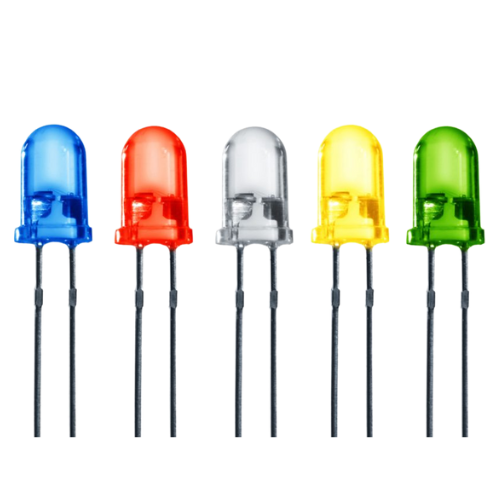
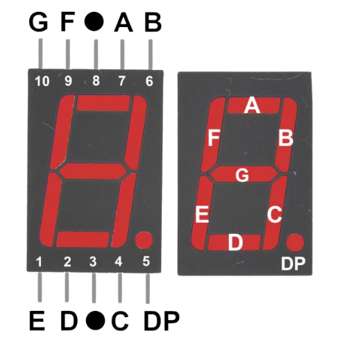

O que é um diodo? e Um Diodo LED? e um display 7 segmentos?
O que é um diodo?
Um diodo é um componente eletrônico que permite a passagem de corrente elétrica em apenas um sentido. Ele funciona como uma “válvula” que impede que a corrente volte na direção contrária, protegendo circuitos e controlando o fluxo elétrico.

O que é um diodo LED?
Um diodo LED (Light Emitting Diode) é um tipo de diodo que, além de deixar a corrente passar em um único sentido, emite luz quando está conduzindo energia. Ele é usado em sinalizações, iluminação e displays por gastar pouca energia e ter longa vida útil.

O que é um display de 7 segmentos?
Um display de 7 segmentos é um componente formado por sete LEDs dispostos em formato de dígitos. Acendendo combinações específicas desses segmentos, ele consegue exibir números de 0 a 9 e algumas letras simples.